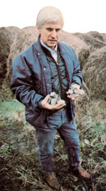

Here's a farmer who makes his expensive equipment do more than double duty.
Alan Jon Fortney
Anyone who's ever driven through the countryside and watched a giant combine efficiently mowing its way across a field of grain has likely marveled at today's technology (and probably offered a silent prayer of thanks that he or she didn't have to make the payments on the mechanical behemoth).
Well, as you may know, other-often less visible-machines are needed to turn field crops into pelletized or cubed feed for livestock. Like the combine, these motorized monsters are very expensive ... and they, too, spend the bulk of their working lives housed idle in cavernous sheds, waiting to lumber into action when the crop matures. In fact, most feedmaking equipment sees use only from April to September, and-even if the harvest is exceptionally good-the total operating time of such machines may amount to no more than 800 hours a year.
"This equipment is simply too expensive to sit idle for the better part of the year," notes Russell Laslocky, owner of the 250-acre Windrow Farm near Shoreham, Vermont. So, when Russ read about a local utility's plan to fuel one of its generators with wood chips, he began wondering whether his alfalfa-compacting equipment might be used, during the off season, to produce compressed biomass fuel for woodstoves and furnaces. And before long the machines-a gargantuan California Century pellet mill and a huge John Deere 390 alfalfa cuber-had been adapted to turn out combustible pellets and cubes ... from sawdust and waste paper.
Laslocky buys sawdust from local suppliers for about $20 a ton, and he's able to obtain castoff paper from offices, newspapers, and other sources free for the hauling (the cost of transporting the paper does average $20 to $25 a ton, though). And once the Vermonter has pelletized or cubed the waste materials, he sells them through a dealer network-in 40-pound bags or by bulk-for $60 to $100 a ton, under the trade name "Thermex".
FROM SAWDUST TO PELLETS
After the sawdust arrives at Windrow Farm, it's dumped into an automatic feeder. A conveyor then carries the pulverized wood to a 30-foot-long tumbler containing three concentric drying cylinders (since the sawdust has a moisture content of between 50% and 60%, it must be dehydrated to about a 20% moisture content to become an efficient fuel).
Following its trip through the dehydrator, the sawdust is augured into one of the two "cyclones", or tunnellike hoppers, which tower above the processing plant's roof. From there, the shavings are gravity-fed into the California Century pellet mill ... and are extruded as a kind of woodchip spaghetti, which measures about 3/8" in diameter.
FROM TRASH TO STOVE FOOD
In the early stages of his machine modification experiments, the hay farmer successfully solved a problem he experienced when he first fed paper through the John Deere cuber: The material's light weight (about half a pound per cubic foot) caused it to hang and jam in the equipment. Some adjustments were made, though, and the cuber now readily accepts castoff printing supplies.
Unlike sawdust, paper doesn't need to be dried before it's processed, Instead, it's simply fed into a hammermill, then routed to the cyclone and subsequently directed to the cuber ... from which it emerges as 1-1/4" blocks. (Laslocky also uses the cuber to produce a blended wood-and-paper "nugget" ... but he admits that his combination products are still in a developmental stage. For ease of operation, the Vermonter prefers to use either 100% wood or 100% paper in formulating his Thermex wares.)
BARGAIN BTU
Windrow Farm is currently producing paper cubes, wood pellets, blended wood/ paper nuggets, dried wood chips, and ground-up wood chips known as "hogged fuel". The smaller-sized wood products are most suited for use in furnace stokers ... but the paper cubes, which can be burned in wood or coal stoves, are in the greatest demand. Therefore, Laslocky is concentrating (for the present) on making the blocks, and he estimates that his equipment-when operated at full capacity-can turn out four to five tons of the cubed biomass fuel an hour.
Laslocky has found that the heating value of his recycled fuel is "roughly equivalent" to that of split hardwood. The wooden pellets yield about 7,000 to 8,000 BTU per pound . . . while the paper cubes rate approximately 6,000 to 7,000 BTU/ pound. When ignited, the materials display some of the characteristics of coal (short flame and slow, smoldering burn) . . . and tests conducted by the Vermont State Energy Office have established that the emissions generated by the cubes or pellets are well within an acceptable range. [EDITOR'S NOTE: We have to assume that the pollutants produced by burning paper will vary with the inks and other substances used on the material in its original form.]
WHAT'S REQUIRED
Obviously, Laslocky's enterprise isn't for the backyard entrepreneur . . . he estimates that it would take a "from scratch" investment of $1-1/2 to $2 million to establish a sawdust-processing setup, and perhaps half as much (since no dehydrating procedure is necessary) for the equipment to cube paper. Start-up costs would be far lower, however, if-like Mr. Laslocky and other "haymakers"-the prospective fuel producer already owned a pelletizer and/ or a cuber.
Furthermore, the equipment does require some modification before it can perform effectively with wood or paper. When the Green Mountain Stater first investigated the feasibility of making a biomass fuel, he discovered that he couldn't patent the process, but he has subsequently applied for patents on the special alterations he's made in both his machines. Some of the fine-tuning can be accomplished by an "experienced tinker", as Russell phrases it .., but he's also had to order a few custom-designed components.
However, for anyone who has equipment similar to the machinery used at Windrow Farm-and for whom sawdust and waste paper are available at attractive prices-Russell Laslocky's concept may well be worth exploring.
"Hay is becoming a diminishing part of Windrow Farm's income," Russell says. "We're responsible for processing about 600 acres of alfalfa annually . . . and we're not getting much more for it today than we were 12 years ago, while our expenses have increased 300% over the same period of time.
"We'll still handle our alfalfa business, particularly during the summer, which is a slow season for stove fuel .. . but in the future we'll concentrate on producing Thermex. I got into this whole operation by accident, but it's turned out that the demand for alternative fuels-unlike that for hay-is both strong and growing."
EDITOR'S NOTE: While Mr. Laslocky has not yet received patents on his equipment modifications, he will soon be offering consulting services to farmers who wish to alter their machines for the production of paper/wood pellets or cubes. You may write (please enclose a self-addressed, stamped envelope) to Russell Laslocky, Dept. TMEN, Windrow Farm, Box 114, Shoreham, Vermont 05770.
|
 |
|
|